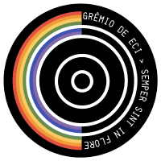

Fluxograma interativo do curso
Os dois campos são opcionais. O perfil fica só neste navegador, e suas marcações e planos continuam.
Use AAAA/1 ou AAAA/2. Deixe em branco se ainda não quiser datar o período atual.